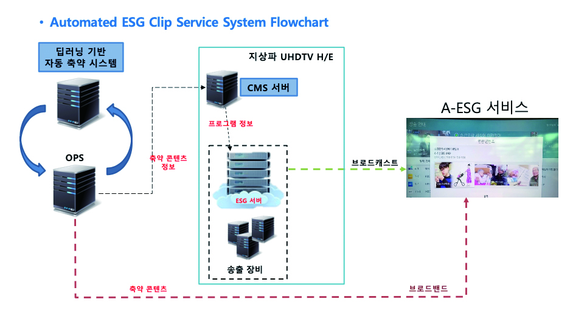

AI

AI국내 홈쇼핑 방송 시장 현황
및 비즈니스 전략 변화
노희윤
(정보통신정책연구원 방송미디어연구본부 전문연구원)
-
SBS에서는 다년간 지속적으로 핫클립 생성 딥러닝 기술을 방송시스템에 적용하여 업무 효율을 높이려는 시도를 하였다. 본 기고문에서는 그동안 누적된 SBS의 핫클립 생성 딥러닝 기반 방송시스템의 기획, 개발, 적용 및 운영 사례에 대한 전반적인 내용을 다루려고 한다. 또한 구축 과정에서 발생하는 어려움과 그에 대한 해결책도 공유하고 논의하려 한다. 본 강의에서 소개할 딥러닝 기반 방송시스템은 하이라이트 구간 예측, UHD 방송 A-ESG 서비스 운영 시스템, 유튜브 채널 운영 시스템, 매쉬업 콘텐츠 제작 지원 시스템 등이다.
-
1들어가며최근 미디어 소비에 대한 주도권은 방송사에서 시청자에게 넘어갔다. 시청자들은 원하는 미디어를 원하는 시간에 소비하고자 한다. 변화된 시청자의 요구에 대응하기 위해 미디어 서비스 업체들은 호흡이 긴 동영상을 짧은 길이의 동영상으로 편집하여 클립형 미디어 서비스를 제공하고 있다. 이러한 클립형 미디어 서비스를 위해서는 동영상 편집이 필수적으로 필요한데, 최근에 이미지 인식/분석 능력을 비약적으로 발전시킨 딥러닝 기술을 동영상 자동 편집 기술에 적용하여 자동 생성된 축약 결과물의 정확성을 크게 향상시킨 기술들이 제안되었다.(방송과미디어, 홍순기)
한편 유튜브로 대표되는 OTT 기반 롱테일 플랫폼이 부상하면서, 국내 방송사들은 방대하게 보유하고 있는 구작 영상들을 유통하여 수익화할 수 있는 방안에 대해 관심을 가지게 되었다. 구작 영상을 짧은 핫클립으로 제작하여 유통하는 경우 기존 VoD 서비스와의 충돌을 피할 수 있고, 신규 영상에 비해 제작비가 적게 드는 장점이 있다. 한편으로는 수많은 구작 회차 영상에서 시청자에게 호소력 있는 영상을 찾아내기 위한 노력이 많이 든다는 어려움도 존재한다.
국내 지상파 방송사인 SBS는 2018년부터 현재까지 구작 영상을 유튜브에 핫클립으로 유통하는 과정에서 발생하였던 어려움을 해결하기 위해, 딥러닝 기반 핫클립 생성 시스템을 다양하게 적용해 왔다. 이에 본 기고문을 통해 SBS에서 개발한 핫클립 생성 딥러닝 기반 시스템들을 소개하고, 딥러닝 기술 적용 방안과 경험을 공유하고자 한다. -
2딥러닝 기반 핫클립 자동 생성 기술장단기 기억 신경망(Long Short-Term Memory) 기반으로 프레임 진행에 따른 문맥 정보를 습득하여, 각 프레임마다 하이라이트 지수를 계산해 주는 방법이 제안되면서, 딥러닝 기반 시스템으로 핫클립 자동 생성에 사용할 수 있는 수준의 정확도를 확보할 수 있었다. 따라서 SBS에서는 장단기 기억 신경망 기반의 하이라이트 지수 생성 딥러닝 네트워크를 학습하고 사용하기 위해, 그림 1과 같이 SMR(Smart Media Rep) 클립에 기반한 학습데이터를 생성하였다. 일반적으로 SMR은 방송국에서 방영된 회차에서 10개~15개의 3분 내외 클립을 생성한다. 생성된 SMR 클립은 포탈 등을 통해 유통되어 높은 조회수를 기록하는 것이 목표이므로, 회차 영상에서 SMR 클립에 포함된 구간의 하이라이트 점수를 1로 설정하고 나머지 구간의 하이라이트 점수를 0으로 설정하여 다량의 학습데이터를 자동으로 생성할 수 있었다.
딥러닝 네트워크 학습은 그림 2와 같이, 제공된 회차 영상을 프레임 단위로 샘플링한 후 합성곱 신경망(Convolutional Neural Network)을 이용해 프레임 내 정보 분석을 하고, 분석된 정보를 LSTM 네트워크에 넣어서 프레임 간 정보를 분석하는 방법을 사용하였다. 특히, 영상의 스토리 특성을 반영하기 위해서, 선행 및 후행 장단기 기억 신경망 네트워크를 각기 추가하여 네트워크를 구성하였다. 선행 및 후행 장단기 기억 신경망 네트워크에서 나온 정보를 나란히 붙인 후, 최종 FC(Full-Connected) 네트워크에 통과시켜 0과 1 사이의 하이라이트 점수를 계산한다. 마지막으로 계산된 하이라이트 점수와 SMR 데이터를 이용해 생성한 하이라이트 점수의 에러를 최소화하는 방향으로 딥러닝 네트워크를 지속적으로 갱신하여 학습을 진행하였다.
지금까지 핫클립 자동 생성을 위한 딥러닝 네트워크에 대해 간단하게 설명하였다. 위에서 설명한 장단기 기억 신경망 기반 네트워크는 2018년 당시에는 가장 성능이 좋은 기술 중 하나였지만, 그 후 지속적인 딥러닝 기술 발전에 의해 더 진화된 네트워크가 발표되었다. 하지만 프레임 단위로 화면 내와 화면 간 분석을 순차적으로 진행하여 하이라이트 점수를 계산하는 방식은 바뀌지 않았다.
그림 1핫클립 자동 생성 딥러닝 기술을 위한 학습데이터 생성출처: https://towardsdarascrence.com/understanding-bidirectional-rnn-in-pytorch-5bd25a5dd66
그림 2핫클립 자동 생성을 위한 딥러닝 네트워크 학습출처: Ke Zhang, etc al, Video Summarization with Long Short-term Memory, ECCV 2016
딥러닝 기반 핫클립 자동 생성 기술을 통해 프레임 단위로 예측된 하이라이트 점수를 얻을 수 있다. 따라서 클립 길이를 고정해서 클립 길이 안에 포함된 프레임들의 평균 하이라이트 점수가 가장 높은 구간을 찾는 방법으로 핫클립을 생성할 수 있다.
3핫클립 생성 딥러닝을 활용한 방송시스템 구축 사례3.1.. UHD 방송 A-ESG 서비스 운영 시스템
지상파 UHDTV는 ATSC 3.0 표준을 기반으로 하고 있으며, 이는 방송통신을 융합한 새로운 양뱡향 서비스를 구현할 수 있는 가능성을 열었다. 특히, 클립형 미디어 서비스와 관련하여 지상파 방송 3사는 A-ESG(Advanced Electronic Service Guide) 서비스를 제공하였다. 기존 TV 및 유료 방송 사업자를 통해 제공되고 있는 “방송 안내” 기능에 그치지 않고, 시청자가 원하는 프로그램에 대한 상세 정보 및 썸네일 뿐만 아니라 하이라이트 영상, 예고 방송 등의 클립형 미디어를 그림 3과 같이 제공 받을 수 있다.
2017년 중반에 지상파 UHD 방송이 시작된 후, UHD 방송을 통해 다양한 부가 서비스를 제공하기 위한 연구가 활발히 이루어졌다. 그 일환으로 앞서 말한 A-ESG 서비스를 제공하기 위한 기술도 연구되었다. 당시 A-ESG 서비스 제공을 위해 당면하였던 가장 큰 문제는 A-ESG를 위한 클립 제작 비용을 최소화해야 한다는 점이었다. 따라서 핫클립 자동 생성 딥러닝 네트워크를 활용하여 A-ESG 서비스에 제공하는 클립을 자동으로 생성하는 시스템을 개발하게 되었다. 당시 사내 시스템의 한계에 의해, 방영 예정인 회차에서 핫클립을 생성하지는 못하였고, 대신 이전 회차에서 3분 길이의 5개 핫클립을 생성하여 A-ESG 서비스를 통해 제공하였다.
그림 3지상파 UHDTV A-ESG 서비스그림 4UHD 방송 자동 A-ESG 클립 서비스 워크플로우
그림 4를 통해 간략하게 UHD 방송 자동 A-ESG 클립 서비스 워크플로우를 확인할 수 있다. 온라인 유통 시스템(Online Publishing System)은 당사에 구축되어 있는 시스템으로, 방송된 회차를 자동으로 수집 및 트랜스코딩하고 온라인으로 유통할 수 있는 여러 API를 제공한다.
딥러닝 기반 축약 시스템은 온라인 유통 시스템과 지속적으로 통신하여 방송이 끝난 회차 영상이 온라인 유통 시스템에 입고된 것을 바로 확인하고, 보통 15분 안에 자동으로 하이라이트 클립을 생성한다. 생성된 하이라이트 클립의 메타정보인 축약 콘텐츠 정보는 지상파 UHDTV H/E(HeadEnd)의 CMS(Content Management System) 서버에 전달된 후, ESG 서버와 송출 장비를 거쳐 방송망을 통해 UHDTV에 전달된다. 최종적으로 시청자가 A-ESG 클립 서비스를 요청하면, UHDTV가 인터넷망을 통해 온라인 유통 시스템으로부터 핫클립을 전달 받아 재생하게 된다.
UHD 방송 자동 A-ESG 클립 서비스는 방송사 최초로 딥러닝 기반 핫클립 생성 시스템을 실서비스에 적용한 성과가 있지만, 수익화가 가능한 모델은 아니었다. 따라서 개발된 핫클립 생성 시스템을 수익화가 가능한 서비스에 적용하려는 노력을 하게 되었다.
3.2.유튜브 채널 운영 시스템
2018년부터 유튜브가 모든 경쟁자를 제치고 가장 많은 앱 사용 시간을 확보하기 시작했다. (실사용분석 리포트, 와이즈앱) 방송사는 초기에 유명한 구작 회차의 하이라이트 구간을 클립으로 만들어 유튜브에 업로드하는 방식을 사용하였다. 따라서 더 적은 노력으로 품질 높은 클립을 다수 제작하기 위한 시스템을 만들 필요가 있었다. 이에, 그림 5와 같이 방대한 구작 영상을 대상으로 하이라이트 구간을 빠르게 찾아 핫클립을 생성하고 유튜브에 자동으로 게시해 주는 유튜브 채널 운영 시스템을 만들었다.
그림 6은 구작 영상에서 하이라이트 클립을 생성하는 시스템의 UI를 갈무리한 화면이다. 사용자가 작업 패널에서 클립의 길이, 한 회차에서 생성할 클립의 개수 등을 설정하고, 프로그램명을 입력하면, 정보 패널에 해당 프로그램의 회차 정보가 나타나게 된다. 정보 패널에서 특정 회차를 선택한 후에, 다시 작업 패널에서 핫클립 지수 계산 버튼을 누르게 되면 작업 패널의 하단과 같이 핫클립 지수가 재생 시간에 따라 그래프로 그려지게 된다.
그림 5지상파 UHDTV A-ESG 서비스그림 6UHD 방송 자동 A-ESG 클립 서비스 워크플로우그림 7UHD 방송 자동 A-ESG 클립 서비스 워크플로우다시 작업 패널의 큐레이션 시작 버튼을 누르면 앞서 정한 클립 개수와 길이에 따라 추천 핫클립들이 생성된다. 마지막으로 추천 핫클립의 번호를 눌러서 검수 패널에서 핫클립의 내용을 직접 확인하고, 로컬 PC로 다운로드 하거나 제목 및 내용을 직접 입력하여 유튜브에 바로 게시할 수 있다.
2020년에는 구작 영상 유튜브 채널 운영 시스템을 이용하여 SBS DRAMAi CLASSIC 채널을 1년간 운영하였다. 그림 7과 같이 야인시대 구작을 이용하여 총 560개의 클립을 업로드 하였으며 1천 8백만 조회수를 얻는 성과를 얻을 수 있었다.
3.3.매쉬업(Mash-up) 콘텐츠 제작 지원 시스템
앞서 말한 것과 같이 방송사의 초기 유튜브 클립은 단순히 회차에서 핫클립을 생성하여 게시하는 방법으로 운영되었지만, 현재는 제작진이 별개의 콘텐츠를 조합하여 새로운 콘텐츠를 만들어 내는 매쉬업 콘텐츠를 위주로 운영되고 있다.
그림 8사용자 정의 영상 검색 시스템 학습 과정결국 매쉬업 콘텐츠 제작을 위해서는 다양한 콘텐츠에서 제작진이 선택한 주제를 쉽게 찾아내는 시스템이 필요하다. 따라서 SBS에서는 그림 8과 같이 사용자 정의 영상 검색 시스템을 구현하여 제작진에게 제공하였다.
딥러닝의 시작과 끝은 항상 고품질의 학습데이터 확보이다. 사용자 정의 영상 검색 시스템의 핵심은 사용자가 검색할 영상을 위해 스스로 학습데이터를 쉽게 만들고 자동으로 학습할 수 있다는 점이다. 이를 위해, 당사의 온라인 유통 시스템에서 확보하고 있는 장면 단위의 메타데이터를 활용하였다. 온라인 유통 시스템의 부가서비스 시스템로 온라인 유통 시스템 내에 있는 장면 메타데이터를 검색할 수 있는 기능을 구현하였다. 조금 더 구체적으로 제작진이 격투 장면을 검색하는 기능을 추가하는 과정을 예를 들어 설명하면 다음과 같다. 제작진이 온라인 유통 시스템의 부가서비스 시스템에서 격투를 검색하면 시스템은 장면 메타데이터를 이용하여 격투 장면이 들어 있는 영상을 추천한다. 제작진이 추천된 영상에서 실제 격투 장면이 들어 있는 부분을 선택하여 제출하면, 제출된 영상을 학습데이터로 사용, 딥러닝 네트워크를 학습하여 격투 장면 검색 기능을 추가한다. 이제 제작진은 추가된 격투 장면 검색 기능을 그림 9와 같이 SBS가 보유하고 있는 모든 콘텐츠에서 제한 없이 사용할 수 있다.
그림 9사용자 정의 영상 검색 시스템 UI 그림 10사용자 정의 영상 검색 시스템을 이용한 매쉬업 콘텐츠 예제실제로 사용자 정의 영상 검색 시스템을 이용하여 아래와 같이 야인시대 싸움장면 모음.zip 매쉬업 콘텐츠를 구성하여 SBS 유튜브 채널에 성공적으로 공개하였다.
그림 10사용자 정의 영상 검색 시스템을 이용한 매쉬업 콘텐츠 예제실제로 사용자 정의 영상 검색 시스템을 이용하여 아래와 같이 야인시대 싸움장면 모음.zip 매쉬업 콘텐츠를 구성하여 SBS 유튜브 채널에 성공적으로 공개하였다.
-
4 마치며앞서 우리는 딥러닝 기반 핫클립 자동 생성 기술을 살펴보았고, 딥러닝 기술을 이용하여 구작 영상의 효율적인 활용을 위해 구축하였던 시스템들을 살펴보았다. 구축한 시스템의 궁극의 목적은 결국 제작진이 더 나은 콘텐츠를 쉽게 만들기 위한 기능을 제공하는 것이다. 그리고 현재 온라인 상의 더 나은 콘텐츠, 즉 대세 콘텐츠는 숏폼(Short-Form)이 되어 가고 있다. 문자 그대로 ‘짧은 영상’을 의미하는 숏폼은 보통 평균 15초에서 1분 내외의 콘텐츠이다. 2018년 유튜브의 급속한 성장과 함께, 방송사 기준으로 영상의 유통 단위가 회차에서 3~10분 길이의 핫클립으로 변경되었지만, 틱톡(TikTok)과 유튜브 쇼츠(Shots)와 같은 플랫폼의 등장으로 현재 콘텐츠의 길이는 더욱 짧아졌다.(Insight M, 메조미디어)
이러한 변화에 대응하기 위해서, 앞에서 살펴보았던 영상의 하이라이트를 찾는 시스템은 더욱더 고도화 되어야 하는 상황에 놓였다. 숏폼의 주된 소비층인 MZ세대는 원하는 것에 빠르게 몰입하지만, 오래 지속되지는 않는 특성을 보여준다. 즉 빠르게 타오르고 빠르게 식는다. 15초라는 짧은 시간에 <핵심>만 간결하게 전달하는 숏폼의 등장에 환호하며, 그들의 문화로 자리잡고 있는 이유이다.(Digital Insight, 김성지) 여기서 우리가 집중해야 할 부분은 <핵심>이다. 핵심을 단순히 영상의 시간적 압축으로만 본다면, 영상에서 하이라이트 구간을 더욱 정확하게 찾는 기술을 고도화해야 한다는 말이 된다. 물론 이것도 중요하지만 또 한 가지 간과하지 말아야 할 것은 영상을 시청해 주길 원하는 계층을 타켓팅 할 수 있는 기능을 갖추는 것이 더 중요하다. 즉, 이제까지는 SBS가 생성한 SMR 데이터를 기준으로 학습을 진행하여 핫클립을 규정하였다고 하면, 앞으로는 숏폼 플랫폼을 통해 실시간으로 유행하고 있는 콘텐츠의 특성을 학습하여 SBS 콘텐츠에서 유사한 콘텐츠를 찾아내는 작업이 더 중요해지고 있다.
핫클립에 대한 기준을 제시하는 주체가 방송 관계자에서 일반 시청자로 바뀌었다는 점은 여러가지 도전 과제를 선사한다. 이제까지 수행하였던 영상 내 분석을 넘어서 외적으로 신속한 콘텐츠 트렌드 분석 및 예측이 필요하기 때문이다. 벌써부터 머리가 아파오는 것은 어쩔 수 없는 일이지만, 희망적인 말로 기고문을 끝내려고 한다. “우리는 답을 찾을 것이다. 늘 그랬듯이...”(인터스텔라, 크리스토퍼 놀란)
-
Reference
- 한국인터넷기업협회(2020.4). 콘텐츠는 OTT로 흐른다. 인터넷 트렌드 리포트
- A. Krizhevsky, I. Sutskever, and G. E. Hinton. Imagenet classification with deep convolutional neural networks. In NIPS, 2012.
- 이동관, 지상파 UHD 현황 및 부가서비스, 방송과 기술, 2016. 10,(14).
- K. Zhang, W.-L. Chao, F. Sha, and K. Grauman. Video summarization with long short-term memory. In European Conference on Computer Vision(ECCV), 2016.05, pp. 766–782.
- Mayu O., Yuta N., Esa R., Janne H., Rethinking the evaluation of video summaries, CVPR, 2019.
- 와이즈앱, 2016년 3월 ~ 2019년 2월 국내 안드로이드폰 표본조사
- 매시업(Mash-up), 21세기의 연금술, 유인오, 신동윤, 동아 비즈니스 포럼, 2010,(58).